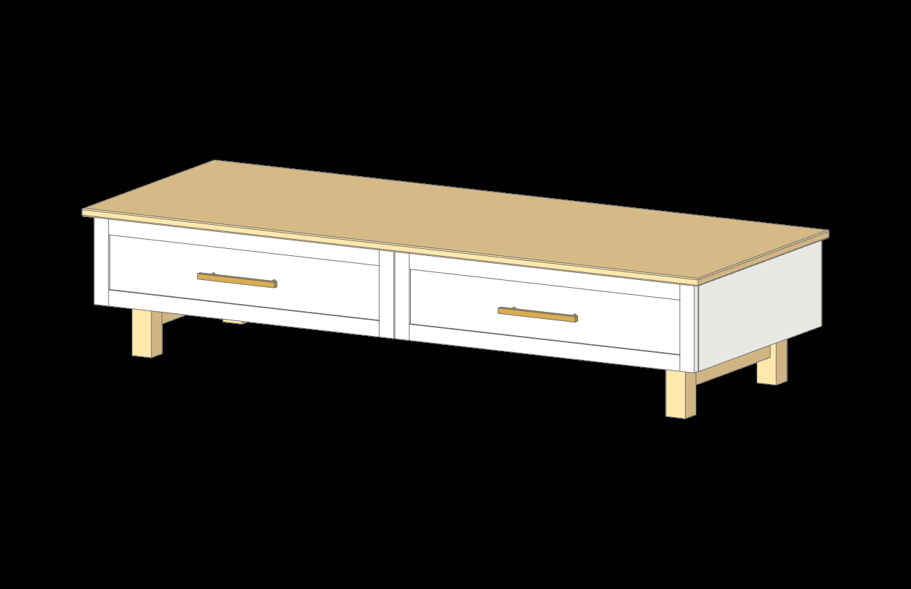
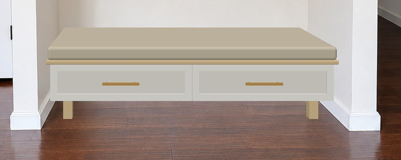
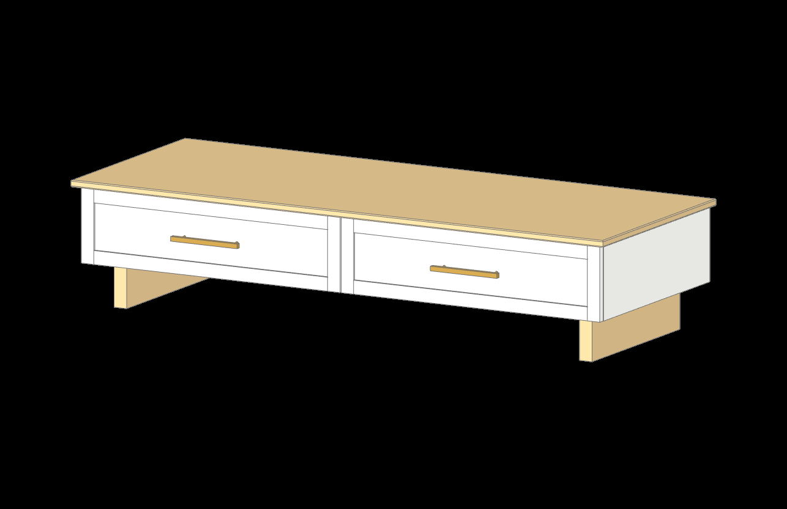
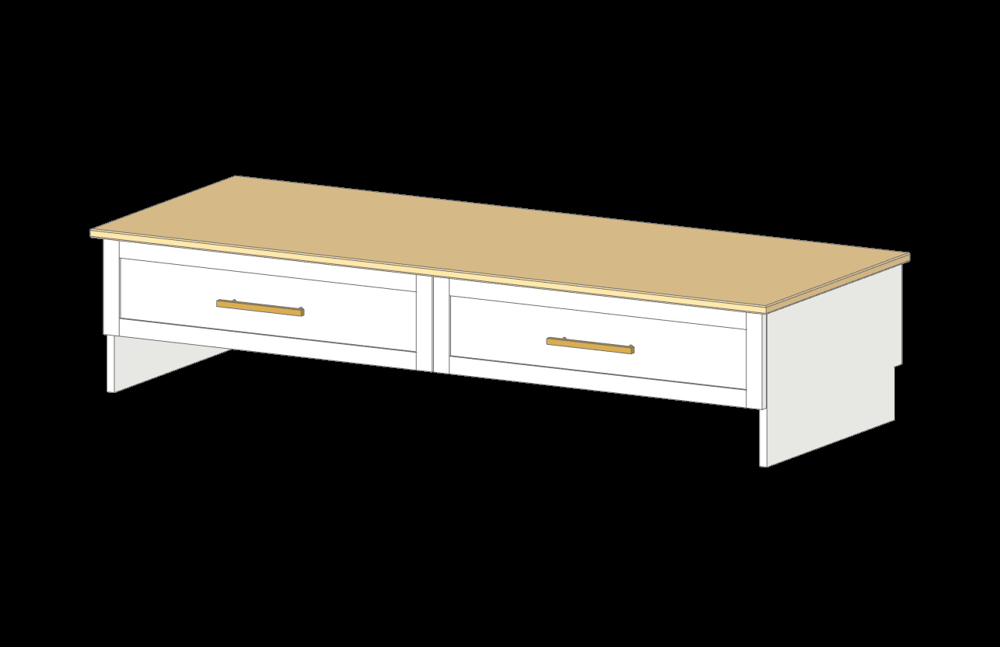
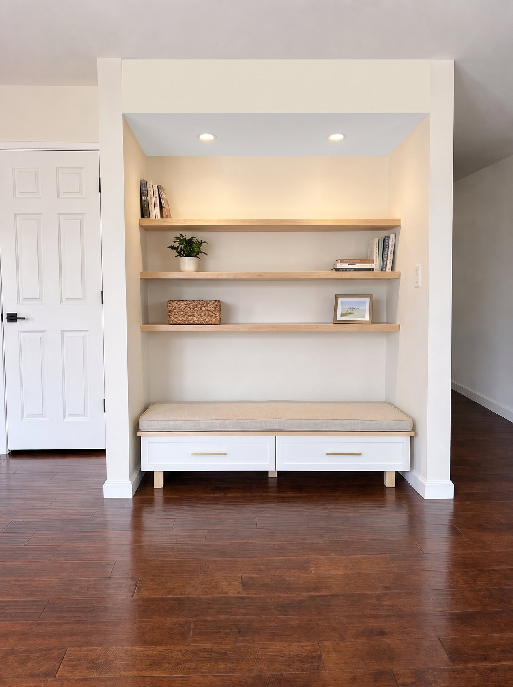

The client wants the bench to stand on its own and leave room for the robot vacuum underneath. Everything above the floor gap carries over from the built-in design: the white frame-and-panel fronts with brass pulls, the maple top at 14 in, the 17 in seat, the two drawers on 21 in Blum undermounts. What changes is how it stands, and that is the pick on this page. The built-in design stays on its own shop page in case they go back.
5 inclear floor under the case
3.4 to 3.9 intallest Roombas, j7 to the new lidar models
64 x 24-1/2top, 1 in of air to each wall
17 inseat with the cushion, unchanged
6-1/2 indrawer boxes, were 8-1/2
31-1/8 x 8-1/8drawer fronts, were 31-3/32 x 10-1/8
An inch of clearance over the tallest Roomba leaves room for a rug under the bench. The five inches come out of the drawers because the seat height stays for Maizy; see the question at the bottom if the client would rather raise the seat.
Three ways to hold it up
All three keep the same case, fronts, top and drawers. Pictures are the CAD model from the viewer (cushion off so the top shows) and the same model projected into the alcove photo at true scale through the matched camera, before Gemini touches it.


A. Four maple legs Recommended
2 x 2 solid maple legs, 5 in tall, set 2-1/2 in in from the ends and 2 in behind the front edge, so the top and case float past them.
A C-frame of 3/4 x 2-1/2 maple rails: one front to back at each end, one across the back, no front rail. Glue and pocket screws; the case screws down onto it.
The robot drives in under the whole front. The back legs sit 2 in inside the case back, clear of the baseboard and its shoe, so the bench pushes right up to the wall.
Reads as furniture: a credenza stance. Bare maple under Osmo to match the top; painted white is a one-line change.
Most parts of the three (4 legs, 3 rails), all straight cuts.

B. Two maple blades
1-1/2 x 5 solid maple boards on edge, front to back under each end, in the same place as the legs, with the same back rail between them for racking.
Fewest parts: two blades and a rail. Screws down through the case bottom into the blade tops, four each.
Needs 8/4 maple for the blades (or two 3/4 boards laminated). Same clear floor, same path for the robot.
Reads heavier and more modern: a slab instead of a post at each end, a solid pale wedge under the white case.

C. Ends to the floor
The painted end panels simply run to the floor; the case bottom sits in a dado 5 in up, and a stretcher at the bottom back ties the two ends.
Closest to the built-in look: a white box floating over a tunnel the robot enters from the front only.
Each end needs a notch at its back bottom corner for the baseboard and shoe (1-1/4 x 4-1/2), which makes it specific to this alcove and shows if the bench ever leaves it.
Banded ply edges at the floor take knocks from the vacuum; the other two keep the ply off the floor.
What the robot needs
Model
Height
Margin under 5 in
Roomba j7, Combo j7+, j9+
3.4 in
1.6 in
Roomba i7, 600 and 900 series
3.6 in
1.4 in
Roomba Plus 405, 505 (2025, lidar)
about 3.3 to 3.9 in
1.1 in or more
Roomba Max 705
fits a 4 in gap
about 1 in
Other lidar robots (Roborock, Dreame)
3.8 to 4.0 in
1.0 in
A rug under the bench takes 1/4 to 1/2 in of that margin. At 4-1/2 in the drawers would gain 1/2 in but a lidar model on a rug would scrape.
How it reads in the room

Option A made photoreal from the true-scale overlay (one Gemini pass, checked: both pulls within 1/4 in of their projected height, legs on the floor where the projection puts them). The shelves and soffit are the picture-only ideas carried over. Maizy, Franco, the pillows and the rest follow once the base is picked, so they are not redrawn three times.
Pick
Two choices, then copy the line below and paste it back to me.
Seat height. The 17 in seat stays as drawn, so the drawers are 6-1/2 in tall (5-17/32 inside) instead of 8-1/2. Every inch added to the seat goes straight back into the drawers.